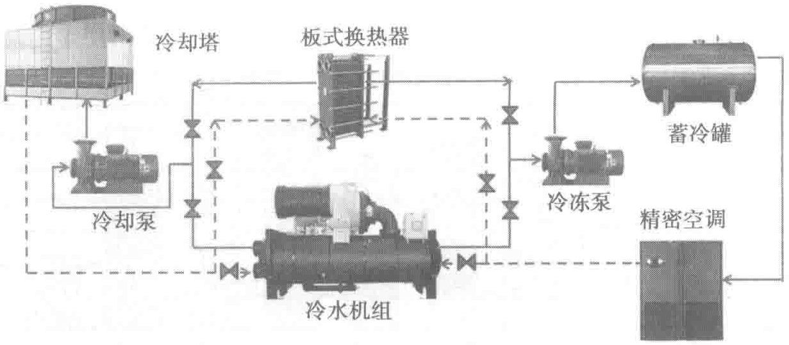
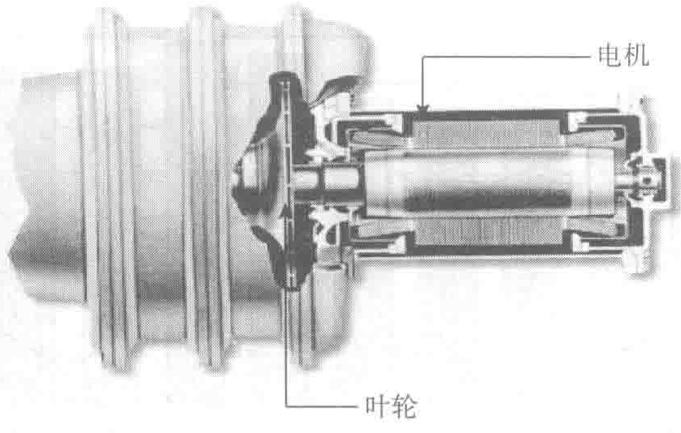

热器为主的自然冷却系统。经测算，全年可运行自然冷却的时间不少于4个月。

3. 冷源系统
京东集团华东数据中心的制冷设备采用4台2461kW（700RT）水冷离心式冷水机组，3+1配备。压缩机形式为三级离心式（见图10-28），如第4章中所述，三级压缩有转速低、运行平稳、低负荷工况好的特点，加大了机组的制冷量调节范围，可调范围为10%～100%；机组在美国ARI-575标准下测试，噪声一般为78～83dB(A)。

机头由直接传动的封闭式压缩机和电机组成，没有增速传动装置和连接装置，整机只有一个运转部件，即电机/压缩机叶轮，以低速运行，仅2950r/min，提高了机械设备运行的可靠性；电动机转子和定子浸在液态冷媒中，改善了电动机的工作环境，防止电机因过热而出现故障，而且不会向冷冻机房内散热。压缩机采轴承用5级航空轴承，寿命可达20万小时，而且具有良好的润滑环境。
直接传动的压缩机没有齿轮传动损失。根据经验数据，齿轮传动损失在全负荷时大约占机组总耗能量的3%～5%。在部分负荷时，齿轮传动损失的百分比会进一步增大。所以本项目采用的三级离心式冷水机组机械传动效率较高。